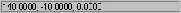
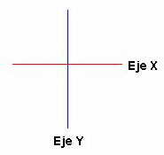

4. Coordenadas absolutas y coordenadas relativas.

La esquina inferior izquierda de la zona de dibujo comienza en la coordenada 0,0,0. A medida que movemos el cursor, se mueven las coordenadas. El primer grupo de números representa la posición del cursor en el eje de las X, el segundo en el eje de las Y y el tercero en el eje de la Z (tres dimensiones).
Normalmente, si trabajamos en un plano en dos dimensiones, se moverán sólo los dos primeros grupos.
1. Activa la rejilla y el forzado de coordenadas.
2. Inicia la orden LINEA.
3. Mueve el cursor hasta que veas en la ventana de coordenadas la coordenada 200,160 (aproximadamente en el centro de la pantalla) y pulsa un clic.
4. Ahora, con mucho cuidado, si mueves el ratón en horizontal, verás que se mueve el primer grupo. Si lo mueves en vertical se mueve el segundo grupo.
Ahora, si tenemos el forzado activado, podemos buscar un punto a la derecha de la línea como por ejemplo el punto 200,190 simplemente moviendo el ratón hacia la derecha. ¿Pero qué ocurre si buscamos otro punto como por ejemplo 200,197?
Para ello utilizaremos el teclado:
5. Escribe: @98,0.
6. Pulsa Esc
¿Qué hemos hecho? Con esta orden, le decimos a AutoCAD que se mueva 98 unidades hacia la derecha, en el eje de las X y 0 unidades en el eje de las Y. Estos movimientos son relativos al último punto, es decir, que toman el último punto como inicio del siguiente segmento de línea. Observa:
La línea roja representa el eje horizontal (X) y la azul el eje vertical (Y). Si queremos desplazarnos por el eje de las X, debemos siempre utilizar el primer grupo de números. Después, dependerá si lo queremos hacer hacia la derecha (positivo) o hacia la izquierda (negativo).
Por ejemplo: @0,100 significa un desplazamiento de 0 en horizontal y de 100 en vertical hacia arriba. @100,-36 significa un desplazamiento de 100 hacia la derecha y de 36 hacia abajo (negativo).
7. Inicia la orden LINEA.
8. Pulsa un clic en cualquier parte de la pantalla para situar el primer punto.9. Escribe: @150,0
10. @0,150
11. @-150,0
12. C
13. Pulsa la tecla Intro
Coordenadas absolutas
1. Selecciona todos los objetos y bórralos.
2. Inicia la orden LINEA
3. Escribe: 200,160 y pulsa Intro
4. Escribe: 0,0
5. Escribe: 200,0
6. Escribe: C
7. Pulsa la tecla Intro